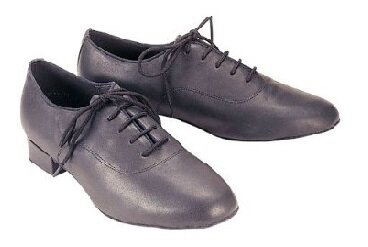
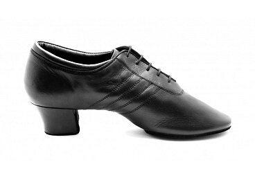
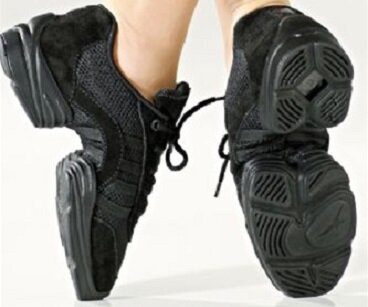
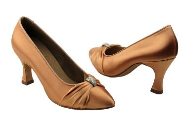
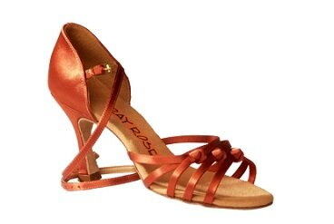
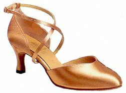

What are Dance Shoes?
The right ballroom shoes make all the difference in one’s comfort, stamina, and ability to execute tricky dance moves. Dance shoes must withstand a tremendous amount of wear and tear without breaking or failing in any way. All dance shoes have a suede bottom to allow for a certain amount of sliding and spinning, while still gripping the floor and allow for powerful movement. However, depending on which styles you dance (Standard, Latin, Smooth, Rhythm), you may need different shoes. Latin shoes for both sexes have a higher heel than the regular ballroom shoes.
Women’s Latin shoes most often feature an open toe, unlike regular ballroom footwear. Getting the right fit with ballroom shoes is not the same as fitting street shoes. In general, dance shoes should be shorter and fit more snugly without causing any discomfort. Always get expert advice on how a particular manufacturer’s shoes run. A good pair of shoes costs about $130 USD. Below are the different types of dance shoes.
Men's Ballroom Shoes
These shoes are used for dancing International Ballroom or American Smooth. They are always black matte or patent leather with laces and a 1 inch heel. They are made for taking walking steps forward on the heel, and so they don't allow for easy pointing of the foot. They are also good shoes for beginners who dance both Standard/Smooth and Latin/Rhythm, because basic Latin can be danced in them. If you want to buy only one pair of shoes, buy these. It is acceptable to wear them dancing Latin/Rhythm at a competition up until the Bronze level.
Men's Latin Shoes
These shoes are used for dancing International Latin or American Rhythm. They generally have a 1.5 to 2 inch heel and come in Black leather, but some specialized shoes come in other colours. They are made for taking walking steps forward on the ball of the foot, and are flexible in the arch to allow for pointing of the toe, unlike Ballroom shoes which have a rigid sole. Ladies sometimes use these shoes as practice shoes, since they are easier on the foot than Lady's shoes, yet still have a heel.
Unisex Practice Sneaker
These shoes are used for practicing all styles of dance. They either have suede bottoms like competitions shoes, or they may have plastic bottoms to allow for more durability. They have a 1 to 1.5 inch heel, and are often flexible at the arch to allow for pointing of the toe. They are padded, and often have ventilation holes. There are other kinds of practice shoes that aren't sneakers as well. Practice shoes are not acceptable for competition, but may save the feet a lot of strain.
Lady's Ballroom Shoes
These shoes are used for dancing International Ballroom. While competition Ballroom shoes are almost always flesh coloured satin, some competitors match their shoes to their dresses, and social Ballroom shoes come in a variety of colours. These shoes are closed toed, may or may not have a strap, and have a 2 to 2.5 inch heel. They are made for taking walking steps forward on the heel of the foot, and have a sturdier heel than Lady's Latin shoes. Because of their sturdiness, it is practically impossible to dance Latin or Rhythm in these shoes.
Lady's Latin Shoes
These shoes are used for dancing International Latin and American Rhythm. They are strapped with an open toe, and while competition Latin shoes are almost always flesh or bronze coloured, social shoes come in a variety of colours. They are made of satin and have a strap that sometimes hooks around the entire foot. The heel is 2.5 to 3 inches, and is the least sturdy heel of all the dance shoes, since steps are generally taken on the ball of the foot. They are good shoes for beginners who dance Latin/Rhythm and Standard/Smooth, because while it is possible (yet not ideal) to dance basic Standard/Smooth in them, and it is impossible to dance Latin/Rhythm in Lady's Ballroom Shoes, because those shoes do not allow for pointing of the foot. As such, if you want to buy only one pair of shoes, buy these. It is acceptable to wear them dancing Standard/Smooth at a competition up until the Bronze level.
Lady's Smooth Shoes
These shoes are used for dancing American Smooth. They generally come with a 2 to 2.5 inch heel, and incorporate the closed toe and sturdy heel of the Ballroom shoe with the flexible sole of the Latin shoe. Competition shoes are almost always flesh coloured, or match the colour of the dress. Social shoes come in a variety of colours.